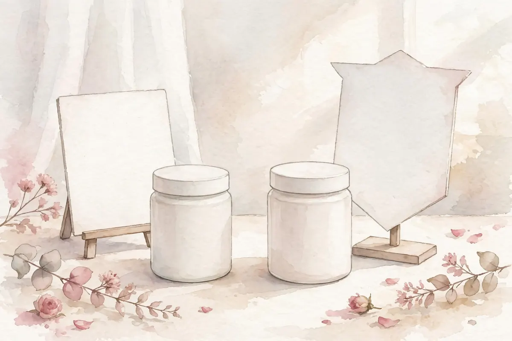

トップ ＞ インナーケア・サプリ ＞ 「栄養機能食品」と「機能性表示食品」の表示の違い
「栄養機能食品」と「機能性表示食品」の表示の違い

サプリメントのパッケージを見ると、「栄養機能食品」や「機能性表示食品」という言葉が書かれているものがあります。似た響きですが、この2つは制度の仕組みが異なります。この記事では、特定の成分の話ではなく、表示の制度の一般的な違いを整理します。
栄養機能食品：国の規格に沿った表示
栄養機能食品は、定められた栄養成分（ビタミン類やミネラル類など）について、国が定めた規格基準の範囲内であれば、あらかじめ決められた栄養機能表示をすることができる食品の区分です。個別の許可や届出を受けて表示する仕組みではなく、規格に適合していれば、定められた文言の範囲で表示できます。パッケージには、栄養機能表示とあわせて、1日の摂取目安量や、摂りすぎへの注意などの表示も求められています。
つまり、栄養機能食品の表示は「決められた成分について、決められた言い方で書かれている」のが特徴です。
機能性表示食品：事業者の届出に基づく表示
機能性表示食品は、事業者が、科学的根拠に関する資料などを消費者庁長官へ届け出ることで、機能性（身体の部位や状態に関する表示）をパッケージに表示できる食品の区分です。ここで大切なのは、国の機関が個別の商品を審査して許可する仕組みではない、という点です。届け出られた情報は公表され、消費者が確認できるようになっています。
パッケージには「機能性表示食品」の文字と届出番号が表示されます。また、「本品は、特定保健用食品（トクホ）と異なり、消費者庁長官による個別審査を受けたものではありません」といった趣旨の表示も添えられます。トクホは国の許可を受けた別の区分ですので、3つを混同しないことが、表示を読む第一歩です。
パッケージでの見分け方
見分けるときは、パッケージの表面と裏面で、区分の名前がどこに書かれているかを探します。栄養機能食品であれば対象の栄養成分名と機能表示、機能性表示食品であれば届出番号と機能性の表示、という具合です。どちらの区分でも、表示されている文言の範囲が、その商品について制度上認められた表現です。
なお、どちらの区分の食品も医薬品ではありません。「疾病の診断、治療、予防」を目的とするものではない、という注意表示もあわせて読むようにしてください。制度の詳しい内容は、消費者庁のウェブサイトなどの公的な情報で確認できます。
どちらの区分にも共通するのは、「表示できる文言の範囲が制度で決まっている」という点です。広告やキャッチコピーの大きな文字だけでなく、パッケージ裏の細かい表示まで含めて読むことで、その商品が制度の中でどう位置づけられているかが見えてきます。
セラフィナ「区分の仕組みが分かると、パッケージの表示の意味が読み取りやすくなるね」

セラフィナ｜美容の道具箱の案内役
「量と表示が分かれば、美容は失敗しない。」——セラフィナと白猫のモコが、買う前のチェックポイントを案内します。綺麗になりたい気持ちに正直に、でも表示は冷静に読むのが、このサイトの約束です。